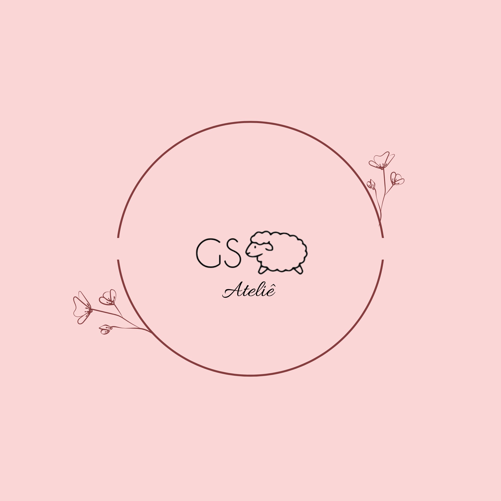

G.S. Cordeiro Ateliê
Sobre Nós
Arte feita à mão para encantar momentos
Sobre o Ateliê
O G.S. Cordeiro ateliê nasceu do amor pelo artesanato e do desejo de criar peças unicas, feitas com carinho, proposito e dedicação.
Cada ponto no crochê e cada detalhe no bordado carregam nao apenas técnica, mas também afeto, resultando em trabalhos que transmitem aconchego, beleza e significado.
Inspirados pelo versículo de Provérbios 31:13 “Ela trabalha com as mãos de boa vontade” acreditamos que o artesanato é mais do que um ofício: é uma forma de expressão, cuidado e entrega.
Aqui, você encontra peças feitas à mão, personalizadas e exclusivas, criadas para encantar e tornar momentos ainda mais especiais.
Nosso compromisso é oferecer não apenas produtos, mas experiências que unem arte, delicadeza e propósito.
Regras do negócio
Os produtos de crochê disponíveis para venda serão cadastrados no sistema, contendo:
- Nome do Produto
- Descrição
- Preço
- Categoria(ex: decoração, vestuário, amigurumi, utilidades) e imagens ilustrativas
- Quantidade disponível em estoque.
Cadastro de clientes:
Os usuários que desejam comprar no site devem realizar um cadastro prévio contendo:
- Nome Completo
- E-mail
- Endereço para entrega
- Telefone para contato
- Senha de acesso
Regras de Compra:
- O cliente pode adicionar itens ao carrinho e finalizar a compra mediante pagamento (via PIX, boleto ou cartão).
- Após o pagamento confirmado, o pedido é preparado e enviado.
- O cliente será notificado por e-mail sobre o status do pedido (processando, enviado, entregue).
- Todos os produtos são feitos artesanalmente. Alguns produtos podem ter prazos maiores de produção, informados na página do produto.
Trocas e devoluções
- Permitidas em até 7 dias após o recebimento, de acordo com o Código de Defesa do Consumidor.
- O produto deve estar sem uso e em perfeito estado.
Página de Listas de Dados
Apresenta os principais dados gerenciados pelo site:
Relação de usuários(clientes):
Lista de clientes cadastrados com:
- Nome
- e-mail
- Endereço de entrega
- Historico de pedidos realizados
Relação de itens (produtos) transacionados pelo site, organizados por categorias:
Categorias principais:
- Amigurumis (bonecos decorativos e brinquedos)
- Itens de Decoração (tapetes, capas de almofada, centros de mesa)
- Utilidades (porta-copos, sousplats, panos de prato decorados)
- Moda (bolsas, chapéus, roupas em crochê
Cada item possui:
- Nome
- Imagem Ilustrativa
- Descrição
- Preço
- Estoque disponível
Relação das transações realizadas pelo site:
Pedidos feitos pelos clientes, contendo:
- Nome do cliente
- Itens Comprados
- Valor total
- Forma de Pagamento
- Status do pedido (em aberto, pago, enviado, entregue, cancelado)
- Data da Compra